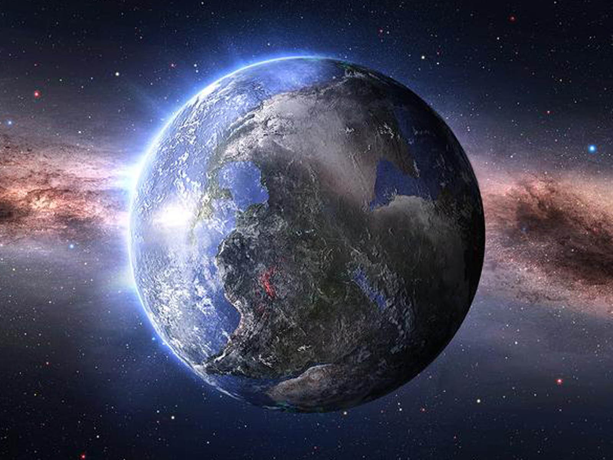

Some short term Environmental Changes include:
Some long term Environmental Changes include:
The climate of an area includes seasonal temperature and rainfall averages, and wind patterns. Different places have different climates. A desert, for example, is referred to as an arid climate because little water falls, as rain or snow, during the year. Other types of climate include tropical climates, which are hot and humid, and temperate climates, which have warm summers and cooler winters.
Climate change is the long-term alteration of temperature and typical weather patterns in a place. Climate change could refer to a particular location or the planet as a whole.

Impacts of Climate Change:
Know more about change in the climate--> CHANGES IN THE CLIMATE!